密度五案 · 同一岛（种子 101）
程序化俯视，和十锚同一套漆。不是概念图。左列户外褶脊，右列诊所折脊（无树、雾轻）。现图是对照；A–E 是五条方案的极限草稿，还没定哪条进生成器。
返回十锚
- A 同家族加件，落到最大空地里
- B 按 7 格锥补洞，留一块 6×6 院
- C 厚隔断开盆地，口在尽端
- D 不改墙，只给现图涂可藏距离（红 = 灯里没有下一坨）
- E 大件长法兰；青 = 贴墙隐蔽带，黄 = 暴露空地
吞没褶脊 · frag-outdoor
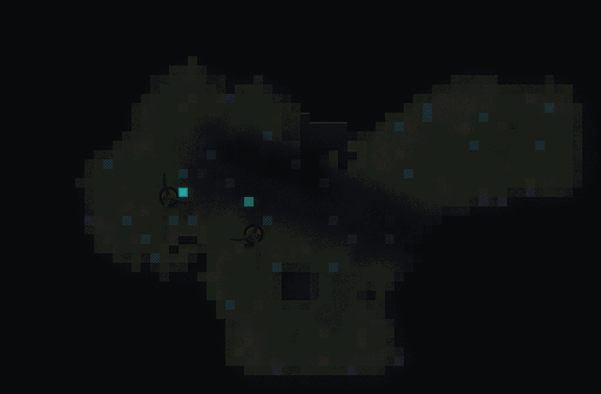
吞没褶脊 · 现图
墙 5.0% · 空矩形 187 · 掩护距离中位 9 / P90 21
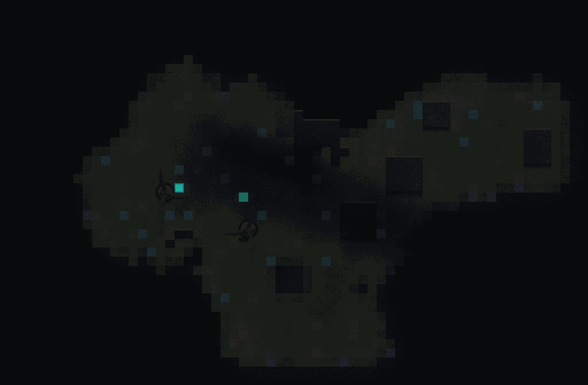
A 吞没褶脊
同一套形状加件，新坨落进当前最大空地
墙 10.0% · 空矩形 132 · 掩护距离中位 4 / P90 11
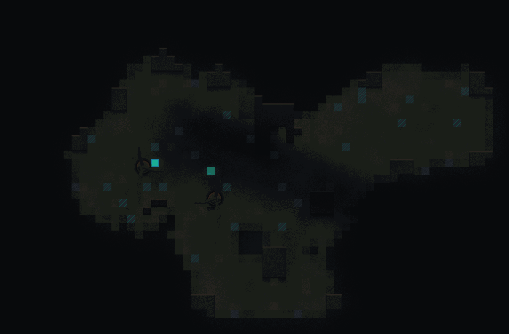
B 吞没褶脊
补到下一坨进入 7 格锥就停；留一块 6×6 院
墙 12.8% · 空矩形 147 · 掩护距离中位 3 / P90 6
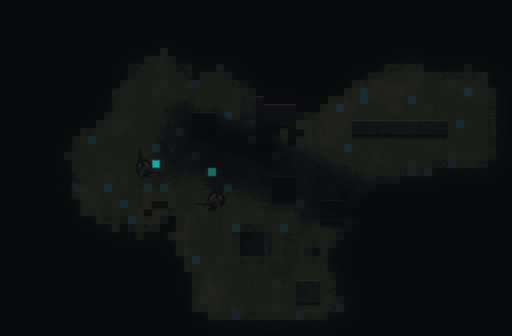
C 吞没褶脊
一道厚隔断切开盆地，口在尽端，院内再放家具
墙 10.7% · 空矩形 96 · 掩护距离中位 4 / P90 8
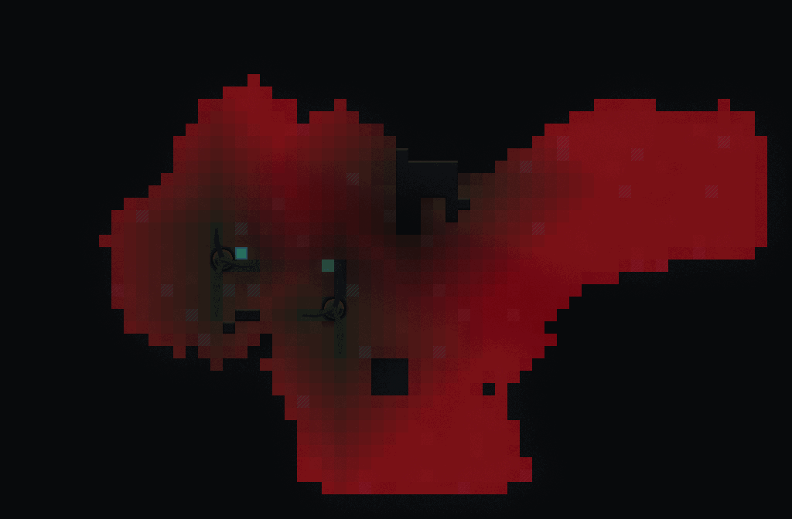
D 吞没褶脊
现图上的可藏距离场：越红越远，>7 格就是操场
墙 5.0% · 空矩形 187 · 掩护距离中位 9 / P90 21
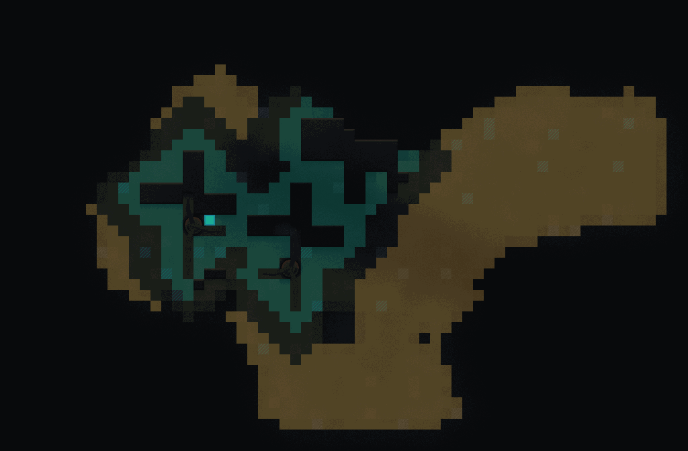
E 吞没褶脊
从已有大件长出 2 厚法兰；青带贴墙，黄带暴露
墙 11.1% · 空矩形 187 · 掩护距离中位 8 / P90 21
无菌折脊 · frag-clinic
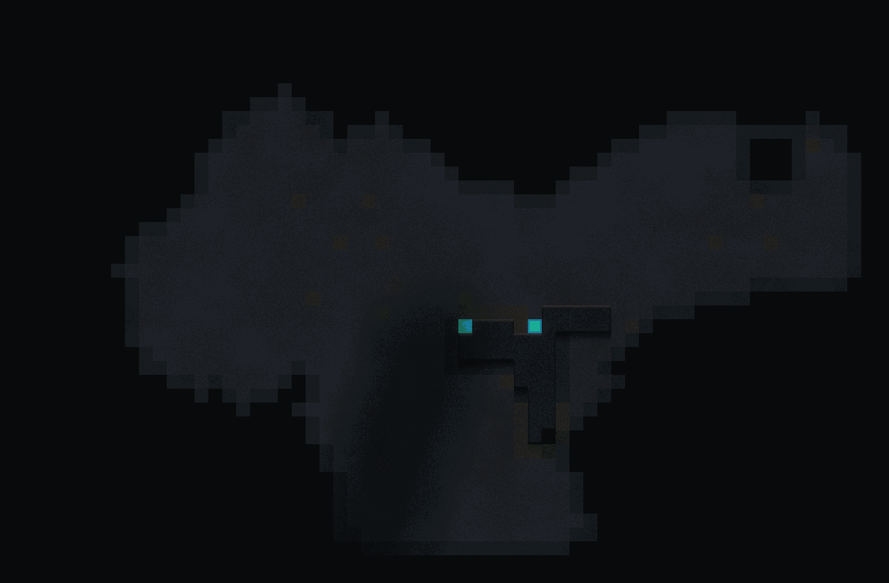
无菌折脊 · 现图
墙 3.8% · 空矩形 336 · 掩护距离中位 14 / P90 26
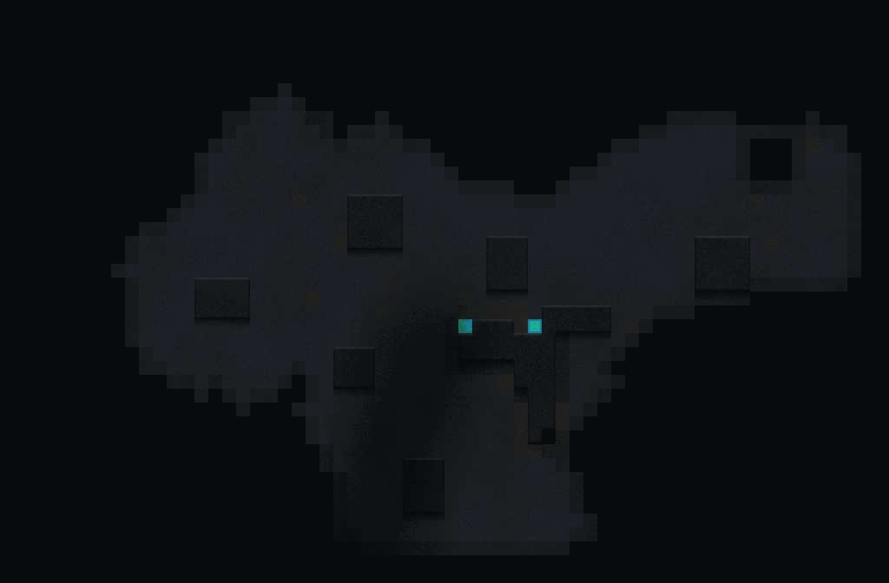
A 无菌折脊
同一套形状加件，新坨落进当前最大空地
墙 11.2% · 空矩形 114 · 掩护距离中位 4 / P90 9
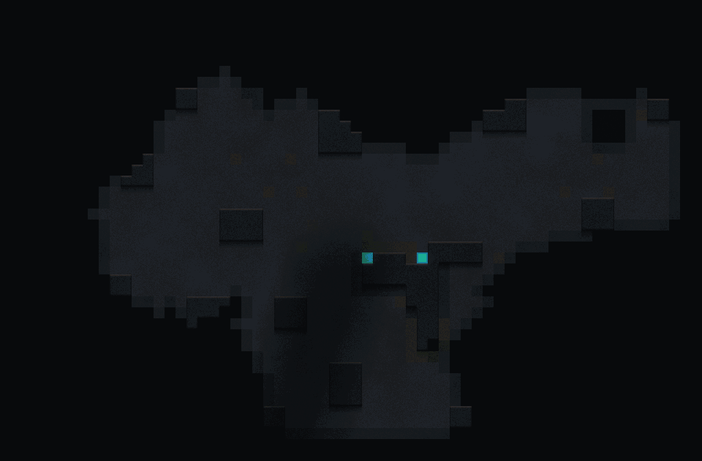
B 无菌折脊
补到下一坨进入 7 格锥就停；留一块 6×6 院
墙 13.3% · 空矩形 232 · 掩护距离中位 3 / P90 6
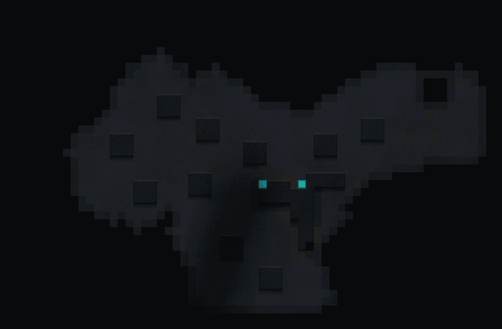
C 无菌折脊
一道厚隔断切开盆地，口在尽端，院内再放家具
墙 12.4% · 空矩形 96 · 掩护距离中位 3 / P90 8
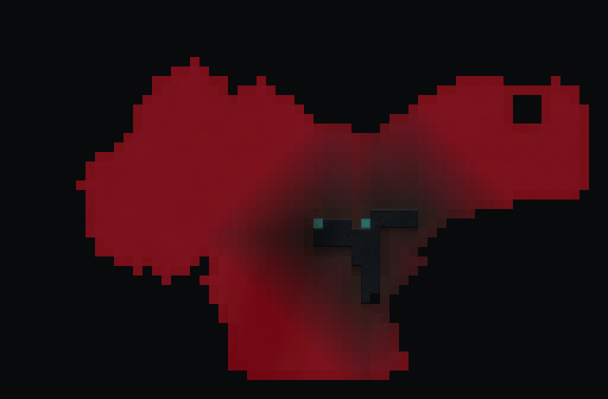
D 无菌折脊
现图上的可藏距离场：越红越远，>7 格就是操场
墙 3.8% · 空矩形 336 · 掩护距离中位 14 / P90 26
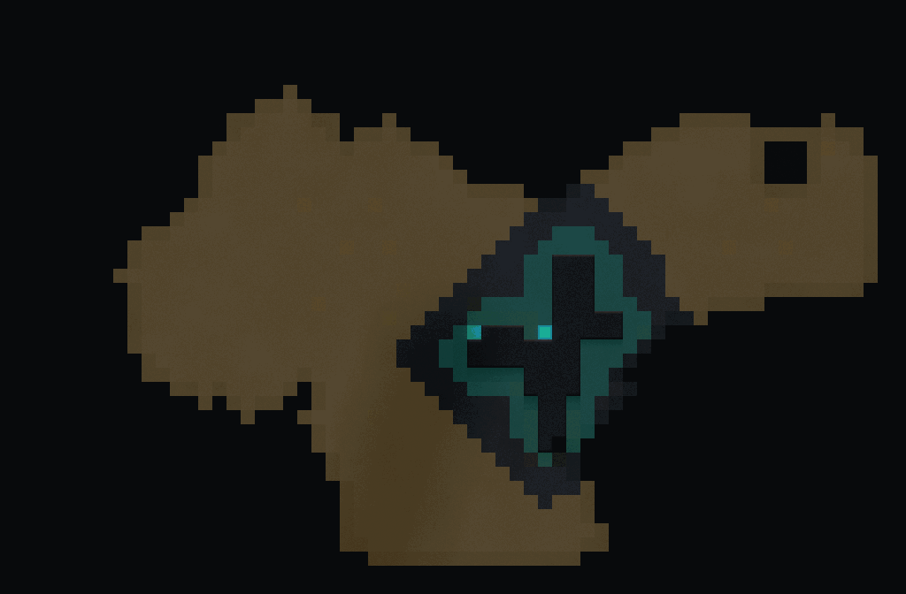
E 无菌折脊
从已有大件长出 2 厚法兰；青带贴墙，黄带暴露
墙 5.3% · 空矩形 288 · 掩护距离中位 13 / P90 25